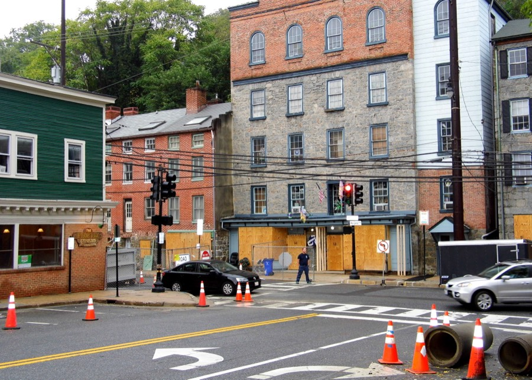
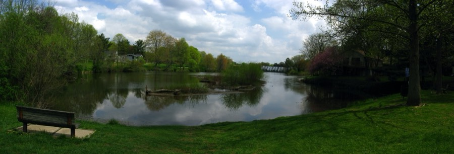
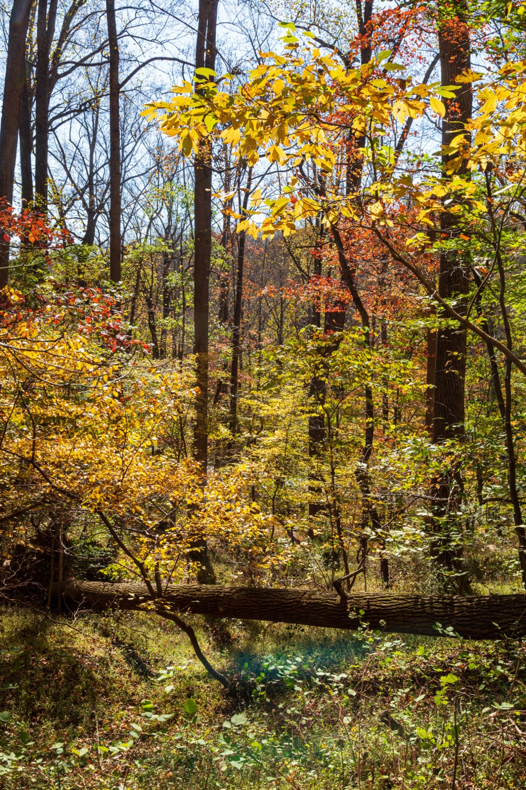

Each explainer below draws on Howard County Climate Forward, the county’s open-data GIS portal, and Maryland iMAP — the same three sources cited throughout this site. Numbers are the county’s own; the framing is ours.
Flooding
A valley built for water, and a town built in it
Historic Ellicott City occupies a narrow gorge where five separate streams in the Tiber-Hudson watershed converge before draining into the Patapsco River. That geography made it a good spot for eighteenth-century mills. It makes it a dangerous spot for a flash flood.
On July 30, 2016, more than six inches of rain fell in about two hours. On May 27, 2018, a similar storm hit again. Both times, water moved down Main Street with enough force to shove parked cars and collapse building facades, and both were declared federal disaster areas. The county now models this risk as part of its regulated 100- and 500-year floodplains, concentrated in the central and eastern part of the county, including the river corridor through Valley Mead and the Oella-adjacent lowlands.
2Federally declared flash flood disasters on Main Street since 20161
100/500-yrRegulated floodplains concentrated in central & eastern Howard County2
In response, the county launched Safe and Sound Ellicott City. Crews have removed several structures at the west end of Main Street to widen the floodway, built new culverts and stormwater retention, and put flood warning sensors upstream on the streams that feed into town.

Main Street, Ellicott City, during recovery from the July 2016 flash flood. Photo: Joe Haupt, CC BY 2.0, resized.
Extreme heat
Some neighborhoods run hotter than others, by design
Climate Forward’s heat vulnerability index looks past the thermometer. It factors in land cover, tree canopy, and paved surface, block by block. By that measure, Wilde Lake Village Center in Columbia ranks highest in the county, a legacy of its 1960s parking layout, aging pavement, and thin tree cover.
Jessup, Hanover, and Elkridge, down in the southeastern part of the county along Route 1, show a related but different pattern: mile after mile of warehouse roofs and truck lots with almost no shade. The physics is the same in both places. Pavement soaks up heat during the day and lets it go slowly at night, so a neighborhood with more asphalt and fewer trees stays warmer after sundown than a leafier one just a few miles away.
#1Wilde Lake Village Center’s countywide heat vulnerability rank1
39%Share of county emissions from energy use, a factor tied to cooling demand1
So far the county’s main response is tree planting and pavement reduction at the worst-off sites, plus cooling centers that open during heat emergencies. See the action list below for how to find one.

Wilde Lake, Columbia — its village center is the county’s highest-ranked heat vulnerability site. Photo: Andrew Bossi, CC BY-SA 2.5, resized.
Stormwater & water quality
Where the rain goes matters as much as how much falls
Every parking lot, rooftop, and stretch of new pavement in the county adds to what engineers call impervious surface: ground that used to soak up rain now sends it straight into storm drains, streams, and eventually the Patapsco. That runoff picks up road salt, sediment, fertilizer, and oil residue on the way down. Stormwater management and water quality end up being the same problem, seen from two angles.
Howard County tracks this through its green infrastructure network, the forests, wetlands, and stream buffers the county is trying to hold onto because they filter and slow runoff before it ever reaches a waterway. Maryland iMAP’s statewide layers zoom that picture out, showing how the Patapsco’s tributaries tie Howard County into the larger Chesapeake Bay watershed.
52%Share of county emissions from transportation — also the source of most road-surface runoff1
Rain barrel rebates, tree planting, and stream buffer restoration are the county’s main tools here, on top of the green infrastructure network mapped on its GIS portal.

Patapsco Valley State Park — part of the county’s green infrastructure network. Photo: Andrew Parlette, CC BY 2.0, resized.Practical next steps
What Howard County residents can actually do
Flooding
Look up your property’s flood zone with the county’s DFIRM floodplain viewer before assuming you’re outside a mapped risk area.
If you’re in or near a mapped floodplain, ask your insurer specifically about flood insurance — standard homeowners’ policies in Maryland generally exclude it.
Sign up for county emergency alerts, especially if you live or work near Main Street, Ellicott City, or the Patapsco River corridor.
Extreme heat
The county opens cooling centers during heat emergencies — libraries and senior centers are common locations; check current listings before a heat advisory hits.
Ask about the county’s tree planting programs if you live in or near Wilde Lake, Jessup, Hanover, or Elkridge — canopy expansion is targeted at the highest-vulnerability sites first.
Check on elderly or medically vulnerable neighbors during multi-day heat events; heat vulnerability maps track land cover, not who is inside the buildings on it.
Stormwater & water quality
Howard County has run rain barrel rebate and giveaway programs — check current offerings through the county’s stormwater management division.
Planting native trees and shrubs on your own property adds to the green infrastructure network the county is trying to expand.
Avoid over-applying fertilizer and de-icing salt; both travel through storm drains directly into local streams with no treatment step in between.
Sources
Howard County Office of Community Sustainability, Climate Forward dashboard — emissions targets, sector breakdown, and heat vulnerability index. climateforward.howardcountymd.gov
Howard County GIS / Open Data portal — DFIRM viewer, regulated floodplain layers, and green infrastructure network. data.howardcountymd.gov